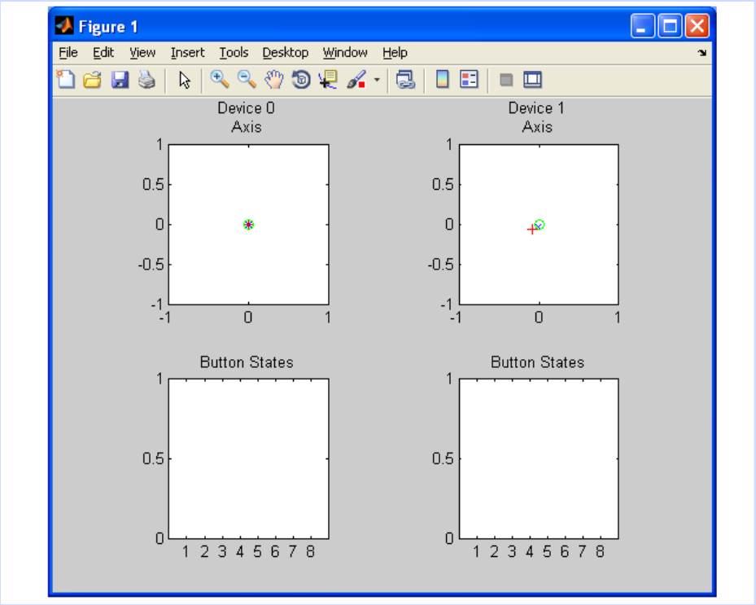

Computerized game utilizing joysticks to score points against an
opponent
Practice with Joystick

Practice Runs
We will begin with a practice run so you can get a feel for the
task. During this time, you will be playing against the experimenter
and points will not be counted.
Fixation crosses
First you will see white fixation crosses against a black
background. Please focus your attention on these white crosses.
Pictures of Your Opponent
You will then see a picture of your opponent. This could you be your
human opponent, whom you will meet before the scan, or a picture
indicating the trial will be against the computer opponent. (During
the practice session, you will see a picture of a smiley face to
indicate that the trial is against the experimenter).
It is VERY IMPORTANT that you keep the joystick straight and in the
center during the period the picture of your opponent is on the
screen, or else the trial will not continue.
Game
During game play, you will control the movement of the ball with the
joystick. Your purpose is to cross the goal with the ball and make
it past the bar (controlled by the goalkeeper).
Note: the edges of the bar are "sticky", and thus touching them will
keep you from crossing the goal line.
Payment
You will receive $35 plus a $10 bonus for an accuracy rate above
33%. That is, if you score on more than 33% of trials, you will
receive the bonus.